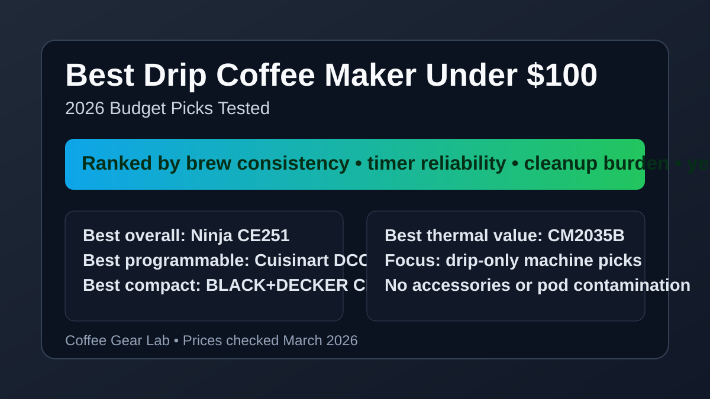
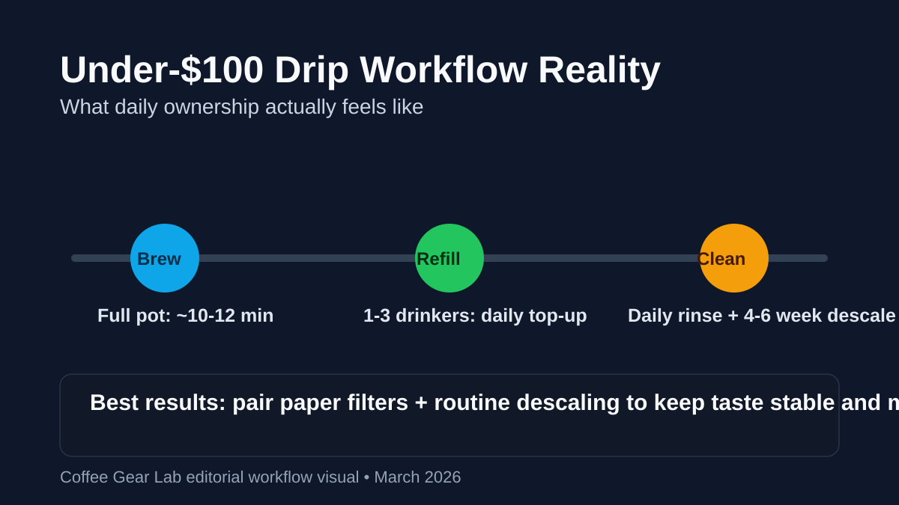

Best Drip Coffee Maker Under $100 (2026): 8 Budget Picks Tested
If you need a reliable daily drip machine without breaking the $100 cap, you have strong options in 2026. We tested eight drip brewers for brew speed, timer reliability, carafe usability, cleanup friction, and annual upkeep costs so you can choose a machine that actually fits real weekday use.

Direct answer: For most buyers, the Ninja CE251 is the best drip coffee maker under $100 because it balances reliable programming, consistent brew quality, and low daily friction. If you want the most automation, pick the Cuisinart DCC-3200P1. If compact size matters most, go with the BLACK+DECKER 12-Cup Digital.
TL;DR winners
Best overall: Ninja CE251 Programmable Brewer
Best programmable: Cuisinart DCC-3200P1 Perfectemp
Best compact: BLACK+DECKER 12-Cup Digital CM1160B
Best thermal-value pick: BLACK+DECKER Thermal CM2035B
Comparison table
Prices checked: March 2026
| Product | Best for | Capacity (cups) | Programmable timer (Yes/No) | Carafe type (Glass/Thermal) | Brew pause / mid-brew pour (Yes/No) | Time to full pot | Cleanup burden (Low / Med / High) | Estimated annual filter/descale cost | Price band | Check price |
|---|---|---|---|---|---|---|---|---|---|---|
| Ninja CE251 | Best overall reliability | 12 | Yes | Glass | Yes | ~10-11 min | Low | $22-30/year | $$ | Check price |
| Cuisinart DCC-3200P1 | Best programmable control | 14 | Yes | Glass | Yes | ~11-12 min | Medium | $24-34/year | $$ | Check price |
| BLACK+DECKER CM1160B | Best compact budget pick | 12 | Yes | Glass | Yes | ~10-11 min | Low | $18-26/year | $ | Check price |
| Hamilton Beach 2-Way 49980A | Mixed single-cup + carafe homes | 12 | Yes | Glass | Yes | ~12-13 min | Medium | $26-36/year | $$ | Check price |
| Mr. Coffee 12-Cup Programmable | Lowest upfront cost | 12 | Yes | Glass | Yes | ~11-12 min | Medium | $20-30/year | $ | Check price |
| BLACK+DECKER Thermal CM2035B | Thermal carafe on a budget | 12 | Yes | Thermal | Yes | ~11-12 min | Medium | $22-32/year | $$ | Check price |
| Mueller 12-Cup Drip | Simple controls for beginners | 12 | No | Glass | No | ~9-10 min | Low | $16-24/year | $ | Check price |
| KRUPS Simply Brew 5-Cup | Small kitchens and low volume | 5 | No | Glass | No | ~7-8 min | Low | $14-20/year | $ | Check price |
Product picks (drip machines only)
How we evaluate: We score each machine on brew quality consistency, usability, cleaning burden, and value for money. For this keyword, we also weight programmable reliability, realistic full-pot brew time, and ongoing ownership costs (filters + descaling), because those decide long-term satisfaction in the under-$100 bracket.
1) Ninja CE251 — Best drip coffee maker under $100 for most people
Verdict: This is the safest buy if you want consistent weekday brewing with minimal maintenance hassle.
Buy this if... you want a true set-and-forget programmable drip machine with dependable daily results.
Skip this if... you specifically need a thermal carafe that keeps coffee hot for longer counterside holding.
Key specs: 12-cup · programmable delay brew · glass carafe · medium footprint.
Pros
- Consistent extraction quality for the price.
- Timer and controls are simple and reliable.
- Brew pause works without excessive dripping.
Cons
- Glass carafe loses heat faster than thermal models.
- No ultra-compact footprint option.
Workflow notes: Full pot in roughly 10-11 minutes; daily rinse is quick and descaling every 4-6 weeks keeps flavor stable.
2) Cuisinart DCC-3200P1 — Best programmable feature depth
Verdict: Great for buyers who want stronger timer and strength-control flexibility while staying under $100 street pricing.
Buy this if... you care about precise scheduling, control options, and larger batch convenience.
Skip this if... you want the easiest cleaning routine with the fewest parts and settings.
Key specs: 14-cup · programmable timer · glass carafe · medium-large footprint.
Pros
- More control range than most budget peers.
- Large capacity suits multi-coffee households.
- Solid value when discounted below MSRP.
Cons
- More settings means a steeper learning curve.
- Slightly more involved cleanup.
Workflow notes: Typically 11-12 minutes for a full pot; expect weekly basket/lid cleanup to avoid oil buildup.
3) BLACK+DECKER CM1160B — Best compact programmable value
Verdict: The best low-cost pick if counter space is limited but you still want timer convenience.
Buy this if... you need a compact body and straightforward controls for everyday morning brews.
Skip this if... you care more about premium build feel or heat retention over raw value.
Key specs: 12-cup · programmable timer · glass carafe · compact footprint.
Pros
- Strong feature-to-price ratio.
- Fits small kitchen counters well.
- Easy to understand for first-time buyers.
Cons
- Lighter construction than mid-tier rivals.
- Carafe pour ergonomics are average.
Workflow notes: Around 10-11 minutes for a full pot; cleanup is low-friction if you rinse basket and carafe daily.
4) Hamilton Beach 2-Way 49980A — Best for mixed one-cup and full-pot homes
Verdict: Best fit when one person wants occasional single cups but the household still needs classic drip carafes.
Buy this if... you need mode flexibility without buying two separate machines.
Skip this if... you want the simplest possible maintenance routine with the fewest components.
Key specs: 12-cup carafe + single-serve side · programmable timer · glass carafe · medium footprint.
Pros
- Useful dual-mode functionality.
- Programmable for carafe mornings.
- Good practical value in mixed-use households.
Cons
- More parts to clean.
- Brew path complexity raises maintenance burden.
Workflow notes: Full pot usually takes 12-13 minutes; single-cup mode is convenient but adds extra rinse points each day.
5) Mr. Coffee 12-Cup Programmable — Best for strict upfront budgets
Verdict: A practical entry-level choice for buyers prioritizing low purchase price over premium extras.
Buy this if... you need a basic programmable drip brewer as cheaply as possible.
Skip this if... you want better heat retention and sturdier long-term build quality.
Key specs: 12-cup · programmable timer · glass carafe · medium footprint.
Pros
- Easy to find below $60 during sales.
- Simple, beginner-friendly control panel.
- Widely available replacement parts.
Cons
- Build quality is basic.
- Long-term reliability can vary by heavy-use pattern.
Workflow notes: Expect 11-12 minutes per full pot and daily quick rinsing; descale monthly if water hardness is moderate or high.
6) BLACK+DECKER Thermal CM2035B — Best thermal value under $100
Verdict: The best thermal carafe option if you want coffee to stay warmer longer without jumping to premium pricing.
Buy this if... you often brew once and pour over 2-3 hours.
Skip this if... lowest possible cleanup effort matters more than heat retention.
Key specs: 12-cup · programmable timer · thermal carafe · medium footprint.
Pros
- Better passive heat retention than glass options.
- Strong value when frequently discounted.
- Useful for slower morning routines.
Cons
- Thermal carafe cleaning takes slightly longer.
- Heavier pour feel than glass counterparts.
Workflow notes: Full brew lands around 11-12 minutes; rinse carafe thoroughly after oils accumulate to prevent stale flavors.
7) Mueller 12-Cup Drip — Best no-frills beginner machine
Verdict: A simple non-programmable option for buyers who value low complexity and fast setup.
Buy this if... you do not need timer scheduling and want straightforward manual brewing.
Skip this if... you want wake-up ready coffee via automatic delay brew.
Key specs: 12-cup · no programmable timer · glass carafe · compact footprint.
Pros
- Very easy to operate.
- Lower maintenance complexity.
- Good fallback option for guest kitchens.
Cons
- No auto-start timer.
- Feature set is sparse versus similarly priced programmable picks.
Workflow notes: Around 9-10 minutes for a full pot; lowest cleanup burden in this roundup when used with paper filters.
8) KRUPS Simply Brew 5-Cup — Best low-volume option for apartments
Verdict: Best for one- to two-cup households that need compact drip performance without carafe waste.
Buy this if... you brew small batches and want minimal footprint in tight kitchens.
Skip this if... you regularly brew for multiple people or need timer programming.
Key specs: 5-cup · no programmable timer · glass carafe · very compact footprint.
Pros
- Small footprint for limited counters.
- Fast brew cycle for low-volume batches.
- Low annual upkeep cost.
Cons
- No timer scheduling.
- Too small for larger households.
Workflow notes: A full 5-cup pot typically takes 7-8 minutes; daily cleanup is quick due to fewer parts and lower coffee oil volume.
Workflow realism: brew time, refill cadence, and cleanup cadence

Time-to-first-cup: Expect roughly 7-13 minutes to complete a full brew cycle depending on capacity and machine power. Most 12-cup models settle around 10-12 minutes.
Refill cadence: For one person, a 12-cup reservoir often covers 1-2 days. For 2-3 drinkers, expect daily top-ups and at least one full refill each morning.
Cleanup cadence: Dump grounds and rinse brew basket after each brew day. Deep-clean lid, spray head, and carafe weekly. Descale every 4-6 weeks in moderate hardness water (every 3-4 weeks in hard water zones).
Still deciding between batch brewing and one-cup speed? Use our drip vs single-serve coffee maker comparison before picking a machine style.
Buying guide: what matters most under $100
1) Reliable programmability beats feature overload. Under $100, timer reliability and easy controls matter more than niche modes you will never use.
2) Capacity should match household rhythm. 5-cup models reduce waste for solo users. 12-14 cup machines are better when two or more people drink coffee before work.
3) Glass vs thermal is a workflow choice. Glass carafes are cheaper and easier to inspect. Thermal keeps coffee hotter longer but needs slightly more cleaning attention.
4) Annual upkeep cost is real. Filter and descaling supplies usually add $15-35 per year. Planning this cost prevents “cheap” machines from becoming annoying long-term buys.
5) Keep this category drip-only. For this intent, avoid listicles that mix pods, accessories, or cleaner tablets into ranked machine picks—they dilute buyer trust and make comparison harder.
FAQ
What is the best drip coffee maker under $100 right now?
The Ninja CE251 is the strongest all-around pick for most buyers because it combines dependable programmability, consistent brew quality, and low cleanup friction while usually staying under $100.
Can I get a truly programmable drip coffee maker under $100?
Yes. Several reliable options under $100 include delay-brew timers, including the Ninja CE251, Cuisinart DCC-3200P1 (on sale), and BLACK+DECKER CM1160B.
Is a thermal carafe realistic at this budget, or is glass better value?
Thermal is possible under $100 during regular discounts, but glass still offers the best value in this price range. Choose thermal only if you frequently drink over multiple hours.
How long should a budget drip coffee maker last with normal use?
Most should last around 3-5 years with consistent cleaning and routine descaling. Hard water and skipped maintenance are the two biggest factors that shorten lifespan.
How often should I descale and clean to keep taste consistent?
Rinse brew components daily, perform a deeper weekly clean, and descale every 4-6 weeks in typical water conditions. In harder water regions, every 3-4 weeks is safer.
Which matters more under $100: brew speed, capacity, or programmability?
For most households, programmability and capacity matter most because they affect daily routine fit. Brew speed is important, but the difference between 10 and 12 minutes is usually less important than dependable timing and correct size.
Related guides
- Best Coffee Maker with Grinder (2026)
- Best Grind and Brew Coffee Maker Under $200 (2026)
- Best Coffee Maker with Grinder and K-Cup Combo
- Best Single-Serve Coffee Maker with Grinder
- Drip vs Single-Serve Coffee Maker (Buyer Comparison)
- Best Espresso Machine Under $200
- Best Coffee Grinder for Pour Over
- Coffee Brewing Ratio Guide